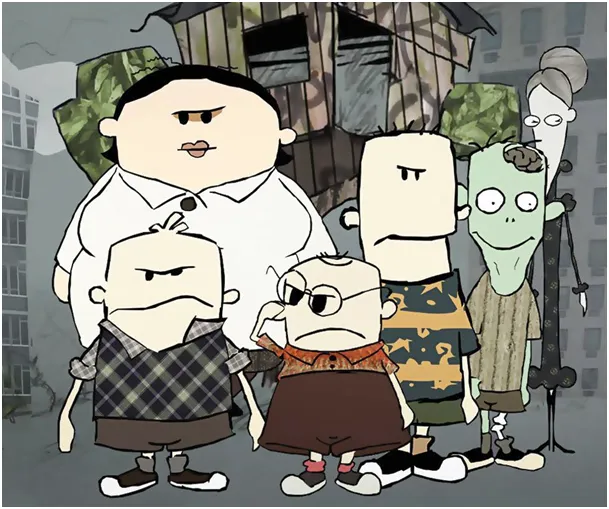
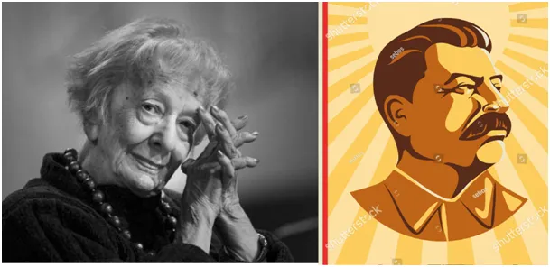

Ciele bez więzi z matką pyta, co to jest intelektualista.
Na to pytanie AI podała mi wiele definicji oraz przykładów postaci, jednym z nich jest niejaki Juwal Noach Harari, jednym z jego istotnych przemyśleń jest teza, że "podstawą przemysłu mleczarskiego jest zerwanie więzi między matką a cielęciem".
Inteligent i intelektualista, to zmory, które kojarzą mi się z epoką Gomułki w Polsce, wtedy jak trzeba było zmontować jakąś prowokację to "intelektualiści" pisali list, zwykle na prymasa lub na biskupa. Wzorowali się oni na mistrzach z czasów stalinowskich. Oto jeden z "niedościgłych wzorów" podpisanych również przez naszą noblistkę Wisławę Szymborską, o czym nie zapominajcie:
"W ostatnich dniach toczył się w Krakowie proces grupy szpiegów amerykańskich powiązanych z krakowską Kurią Metropolitarną. My zebrani w dniu 8 lutego 1953 r. członkowie krakowskiego Oddziału Związku Literatów Polskich wyrażamy bezwzględne potępienie dla zdrajców Ojczyzny, którzy wykorzystując swe duchowe stanowiska i wpływ na część młodzieży skupionej w KSM działali wrogo wobec narodu i państwa ludowego, uprawiali – za amerykańskie pieniądze – szpiegostwo i dywersję.
Potępiamy tych dostojników z wyższej hierarchii kościelnej, którzy sprzyjali knowaniom antypolskim i okazywali zdrajcom pomoc oraz niszczyli cenne zabytki kulturalne.
Wobec tych faktów zobowiązujemy się w twórczości swojej jeszcze bardziej bojowo i wnikliwiej niż dotychczas podejmować aktualne problemy walki o socjalizm i ostrzej piętnować wrogów narodu – dla dobra Polski silnej i sprawiedliwej"

Blisko rok temu w Polsce pojawił się "list szesnastu katolickich intelektualistów".
Większości tych intelektualistów nie znacie na szczęście, ale kilku zapewne tak: Marek Budzisz, Sławomir Cenckiewicz, Piotr Chrzanowski, Piotr Ciompa, Waldemar Gasper, Tomasz Grzegorz Grosse, Marek Jurek, Robert Kostro, Jacek Kowalski, Justyna Melonowska, Paweł Milcarek, Paweł Nowacki, Andrzej Nowak, Tomasz Rowiński, Maciej Urbanowski, Łukasz Warzecha,
List zaczyna się konkretnie: " Chrystus Pan obchodził święto Chanuki (por. J 10,22-23), co powinien wiedzieć każdy katolik." Resztę możecie sobie doczytać, bo szkoda mi miejsca. Cytuję jeszcze tylko zdanie z 2. punktu tego listu: " Nie zmienia to faktu, że obchodzenie uroczystości Poświęcenia Świątyni przez Żydów zasługuje na szacunek, tym bardziej, że Kościół zawsze uważał, że Żydzi praktykując swą religię pozostają świadkami Prawdy chrześcijaństwa, prawdziwości obietnic mesjańskich, które Chrystus wypełnił i aktów historii Zbawienia, które poprzedziły Narodzenie Pańskie." Katolicy są świadkami zmartwychwstania Chrystusa, ale nie gdy nie słyszałem, aby Żydzi mówił to samo. Gdyby to serio traktować, to Żydzi ukamienowali św. Szczepana zapewne po to, by katolicy mieli więcej świętych. Zatem rozumiecie, że intelektualizm współczesny to sztuka składania długich zdań, których prawdziwości większość nie jest w stanie ocenić. Nie dlatego, żeby te zdania były jakoś trudne, ale dlatego, że większość ludzi jest obecnie kompletnie niezorientowana kim są i skąd pochodzi ich dziedzictwo. Oni najzwyklej tego dziedzictwa nie mają, ale doskonale znają wszystkie seriale z Polsatu i TVN i jest fajnie.
Paweł Klimczewski